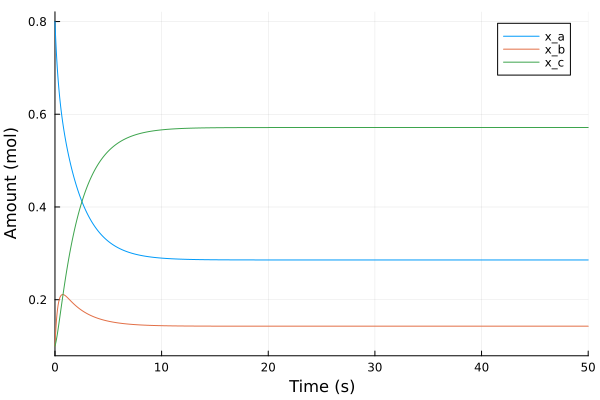
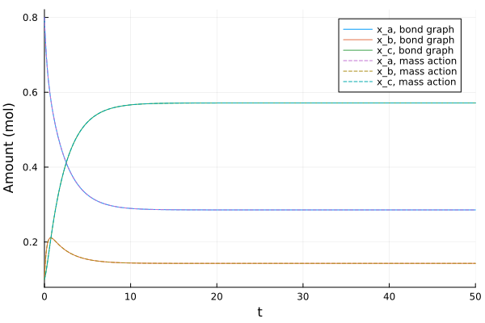

Chemical Reaction Network
The source files for all examples can be found in /examples.
Introduction
A chemical reaction network converts species into one another. Its thermodynamics fixes where it can go: every reaction runs down a difference of chemical potential, and at equilibrium all those differences vanish. Gawthrop & Crampin (2014) model such networks as bond graphs, with chemical potential as the effort and molar flow as the flow, so that the models obey the laws of thermodynamics by construction. This example builds their two-reaction chain (Gawthrop & Crampin 2014, Fig. 1c):
\[\mathrm{A} \rightleftharpoons \mathrm{B} \rightleftharpoons \mathrm{C}.\]
Reaction network model
We assume a dilute, isothermal and isobaric mixture in a fixed volume, so that each species has the chemical potential (Gawthrop & Crampin 2014, Eqs. 2–3)
\[\mu_i = \mu_i^0 + RT \ln\frac{x_i}{V} = RT \ln(K_i\,x_i), \qquad K_i = \frac{1}{V}\,e^{\mu_i^0/RT},\]
where $x_i$ is the amount of species $i$ (mol), $\mu_i^0$ its standard chemical potential, $R$ the gas constant and $T$ the temperature. The thermodynamic constant $K_i$ (1/mol) gathers the standard potential and the volume.
Each reaction's molar flow follows the Marcelin–de Donder formula (Eqs. 4 and 6): with $A^f$ the affinity of the forward reaction and $A^r$ that of the reverse one,
\[v = \kappa\left(e^{A^f/RT} - e^{A^r/RT}\right),\]
with a rate constant $\kappa$ (mol/s). For a reaction $\mathrm{A} \rightleftharpoons \mathrm{B}$ the affinities are the species' potentials, $A^f = \mu_a$ and $A^r = \mu_b$, and substituting the potentials gives first-order mass action, $v = \kappa(K_a x_a - K_b x_b) = k^+ x_a - k^- x_b$ with $k^+ = \kappa K_a$ and $k^- = \kappa K_b$ (Eqs. 7–9).
Here the two reactions have rates $v_1 = \kappa_1(K_a x_a - K_b x_b)$ and $v_2 = \kappa_2(K_b x_b - K_c x_c)$. Reaction 1 consumes A and produces B, reaction 2 consumes B and produces C, so the mass balances are (Eq. 30)
\[\dot{x}_a = -v_1, \qquad \dot{x}_b = v_1 - v_2, \qquad \dot{x}_c = v_2.\]
Their sum is zero, so the total amount $x_a + x_b + x_c$ is conserved. At equilibrium both flows vanish, $K_a x_a = K_b x_b = K_c x_c$, so the equilibrium constants of the two reactions are
\[K_1 = \frac{x_b}{x_a} = \frac{K_a}{K_b} = \frac{k_1^+}{k_1^-}, \qquad K_2 = \frac{x_c}{x_b} = \frac{K_b}{K_c} = \frac{k_2^+}{k_2^-},\]
and each species ends with a share of the total proportional to $1/K_i$.
See also P. J. Gawthrop and E. J. Crampin, Energy-based analysis of biochemical cycles using bond graphs, Proc. R. Soc. A 470: 20140459, 2014 (open access; arXiv:1406.2447, whose section and equation numbers this example cites), Fig. 1 for the bond graphs of this and other small networks.
Bond Graph Model
Each species is a C element, a store of matter whose effort is its chemical potential: it charges as a capacitor does when molar flow comes in. Each reaction is an Re element, a two-port that relates its flow to the affinities on its two bonds and dissipates power, $(A^f - A^r)\,v \ge 0$. A 0-junction (common potential) at each species lets several reactions share it. The bond graph is drawn from the model below with bgplot, once it is built.
| Element | Stands for | Parameters |
|---|---|---|
Ce:A, Ce:B, Ce:C | the pools of A, B, C | $K_a$, $K_b$, $K_c$, $RT$ |
Re:r1, Re:r2 | the reactions A ⇌ B and B ⇌ C | $\kappa_1$, $\kappa_2$, $RT$ |
Preliminary Steps
In this example we first define the two chemical elements, which the library doesn't have, then build and simulate the bond graph model and check its equilibrium against the equilibrium constants. Finally, we simulate the mass-action equations derived above as a plain ModelingToolkit model and compare the results.
We import the bond-graph toolkit to model the system and OrdinaryDiffEqTsit5 to solve the resulting ODE. We also import ModelingToolkit's independent variable t and derivative D, for the custom elements and the reference model.
using BondGraphToolkit
using BondGraphToolkit.ModelingToolkit: t_nounits as t, D_nounits as D
using OrdinaryDiffEqTsit5
using PlotsSystem Element Definitions
Chemical species
A species is a nonlinear compliance (Karnopp, Margolis & Rosenberg 2012, §3.1, pp. 40–42: a C relates its effort to its displacement $q = \int f\,dt$). Here the displacement is the amount $x$ and the effort the chemical potential $\mu = RT\ln(K x)$. @oneport adds the power port power, and the law is written in its bond variables, as for the built-in elements. We call the constructor Ce to keep it apart from the library's linear Compliance; Gawthrop & Crampin (2014) label it C.
@oneport function Ce(; name, K = 1.0, RT = 2577.0, x = 1.0)
@parameters K = K # (1/mol) Thermodynamic constant, K = exp(μ⁰/RT)/V
@parameters RT = RT # (J/mol) Gas constant times temperature
@variables x(t) = x # (mol) Amount of the species, with its initial value
[D(x) ~ f, e ~ RT * log(K * x)]
endCe (generic function with 1 method)Reactions
A reaction is a two-port: port 1 is the bond into it, carrying the forward affinity $A^f$, and port 2 the bond out of it, carrying the reverse affinity $A^r$. Both bonds carry the reaction flow $v$, which the Marcelin–de Donder formula sets. @twoport gives the bond variables e1, f1, e2, f2, each flow positive along its half-arrow:
@twoport function Re(; name, κ = 1.0, RT = 2577.0)
@parameters κ = κ # (mol/s) Reaction rate constant
@parameters RT = RT # (J/mol) Gas constant times temperature
[f1 ~ κ * (exp(e1 / RT) - exp(e2 / RT)), f2 ~ f1]
endRe (generic function with 1 method)Elements
Body temperature, $T = 310$ K, gives $RT$:
RT = 8.314 * 310.0 # (J/mol) R = 8.314 J/(mol⋅K)2577.34The species, each with its thermodynamic constant and initial amount. A chemical potential is $-\infty$ at a zero amount, so every species starts with some:
@named A = Ce(K = 1.0, RT = RT, x = 0.8) # (1/mol, J/mol, mol)
@named B = Ce(K = 2.0, RT = RT, x = 0.1)
@named C = Ce(K = 0.5, RT = RT, x = 0.1)\[ \begin{align} \frac{\mathrm{d}x\left( t \right)}{\mathrm{d}t} &= f\left( t \right) \\ e\left( t \right) &= \mathtt{power.e}\left( t \right) \\ \mathtt{pout.e}\left( t \right) &= \mathtt{power.e}\left( t \right) \\ f\left( t \right) &= - \mathtt{pout.f}\left( t \right) + \mathtt{power.f}\left( t \right) \\ e\left( t \right) &= \mathtt{RT} ~ \log\left( K ~ x\left( t \right) \right) \end{align} \]
The two reactions:
@named r1 = Re(κ = 1.0, RT = RT) # (mol/s) A ⇌ B
@named r2 = Re(κ = 0.5, RT = RT) # (mol/s) B ⇌ C\[ \begin{align} \mathtt{p1.f}\left( t \right) &= \left( e^{\frac{\mathtt{p1.e}\left( t \right)}{\mathtt{RT}}} - e^{\frac{\mathtt{p2.e}\left( t \right)}{\mathtt{RT}}} \right) ~ \kappa \\ - \mathtt{p2.f}\left( t \right) &= \mathtt{p1.f}\left( t \right) \end{align} \]
Model Construction
Each species sits on a 0-junction, which gives it free ports for the reactions. Following Gawthrop & Crampin (2014, Fig. 1c and Eq. 10), every bond to a species points out of its junction into the species (a bare member x), so the species' flow is its rate of change, $\dot{x}_i$; this is also Karnopp's usual orientation for a C (§3.1, p. 42). Each reaction's bonds follow the forward reaction: from A's junction into r1 (free port :r1, leaving), out of r1 into B's junction (:r1 => :in, entering), and the same for r2. B's junction thus has one bond in and two out, and its flow balance is $v_1 - \dot{x}_b - v_2 = 0$, the mass balance of B.
@named ja = Junction0(A, :r1)
@named jb = Junction0(:r1 => :in, B, :r2)
@named jc = Junction0(:r2 => :in, C)\[ \begin{align} 0 &= \mathrm{connect}\left( r2, core_{+}p1 \right) \\ 0 &= \mathrm{connect}\left( C_{+}power, core_{+}p2 \right) \\ \mathtt{core.p2.e}\left( t \right) &= \mathtt{core.p1.e}\left( t \right) \\ 0 &= \mathtt{core.p1.f}\left( t \right) + \mathtt{core.p2.f}\left( t \right) \\ \frac{\mathrm{d}\mathtt{C.x}\left( t \right)}{\mathrm{d}t} &= \mathtt{C.f}\left( t \right) \\ \mathtt{C.e}\left( t \right) &= \mathtt{C.power.e}\left( t \right) \\ \mathtt{C.pout.e}\left( t \right) &= \mathtt{C.power.e}\left( t \right) \\ \mathtt{C.f}\left( t \right) &= - \mathtt{C.pout.f}\left( t \right) + \mathtt{C.power.f}\left( t \right) \\ \mathtt{C.e}\left( t \right) &= \mathtt{C.RT} ~ \log\left( \mathtt{C.K} ~ \mathtt{C.x}\left( t \right) \right) \end{align} \]
A reaction's port 1 is its bond in and port 2 its bond out, so each junction's port towards a reaction connects to p1 and the one from it to p2:
@named network = System([connect(ja.r1, r1.p1), connect(r1.p2, jb.r1),
connect(jb.r2, r2.p1), connect(r2.p2, jc.r2)], t;
systems = [ja, jb, jc, r1, r2])\[ \begin{align} 0 &= \mathrm{connect}\left( ja_{+}r1, r1_{+}p1 \right) \\ 0 &= \mathrm{connect}\left( r1_{+}p2, jb_{+}r1 \right) \\ 0 &= \mathrm{connect}\left( jb_{+}r2, r2_{+}p1 \right) \\ 0 &= \mathrm{connect}\left( r2_{+}p2, jc_{+}r2 \right) \\ 0 &= \mathrm{connect}\left( A_{+}power, core_{+}p1 \right) \\ 0 &= \mathrm{connect}\left( r1, core_{+}p2 \right) \\ \mathtt{ja.core.p2.e}\left( t \right) &= \mathtt{ja.core.p1.e}\left( t \right) \\ 0 &= \mathtt{ja.core.p1.f}\left( t \right) + \mathtt{ja.core.p2.f}\left( t \right) \\ \frac{\mathrm{d}\mathtt{ja.A.x}\left( t \right)}{\mathrm{d}t} &= \mathtt{ja.A.f}\left( t \right) \\ \mathtt{ja.A.e}\left( t \right) &= \mathtt{ja.A.power.e}\left( t \right) \\ \mathtt{ja.A.pout.e}\left( t \right) &= \mathtt{ja.A.power.e}\left( t \right) \\ \mathtt{ja.A.f}\left( t \right) &= - \mathtt{ja.A.pout.f}\left( t \right) + \mathtt{ja.A.power.f}\left( t \right) \\ \mathtt{ja.A.e}\left( t \right) &= \mathtt{ja.A.RT} ~ \log\left( \mathtt{ja.A.K} ~ \mathtt{ja.A.x}\left( t \right) \right) \\ 0 &= \mathrm{connect}\left( r1, core_{+}p1 \right) \\ 0 &= \mathrm{connect}\left( B_{+}power, core_{+}p2 \right) \\ 0 &= \mathrm{connect}\left( r2, core_{+}p3 \right) \\ \mathtt{jb.core.p2.e}\left( t \right) &= \mathtt{jb.core.p1.e}\left( t \right) \\ \mathtt{jb.core.p3.e}\left( t \right) &= \mathtt{jb.core.p1.e}\left( t \right) \\ 0 &= \mathtt{jb.core.p1.f}\left( t \right) + \mathtt{jb.core.p2.f}\left( t \right) + \mathtt{jb.core.p3.f}\left( t \right) \\ \frac{\mathrm{d}\mathtt{jb.B.x}\left( t \right)}{\mathrm{d}t} &= \mathtt{jb.B.f}\left( t \right) \\ \mathtt{jb.B.e}\left( t \right) &= \mathtt{jb.B.power.e}\left( t \right) \\ \mathtt{jb.B.pout.e}\left( t \right) &= \mathtt{jb.B.power.e}\left( t \right) \\ \mathtt{jb.B.f}\left( t \right) &= - \mathtt{jb.B.pout.f}\left( t \right) + \mathtt{jb.B.power.f}\left( t \right) \\ \mathtt{jb.B.e}\left( t \right) &= \mathtt{jb.B.RT} ~ \log\left( \mathtt{jb.B.K} ~ \mathtt{jb.B.x}\left( t \right) \right) \\ 0 &= \mathrm{connect}\left( r2, core_{+}p1 \right) \\ 0 &= \mathrm{connect}\left( C_{+}power, core_{+}p2 \right) \\ \mathtt{jc.core.p2.e}\left( t \right) &= \mathtt{jc.core.p1.e}\left( t \right) \\ 0 &= \mathtt{jc.core.p1.f}\left( t \right) + \mathtt{jc.core.p2.f}\left( t \right) \\ \frac{\mathrm{d}\mathtt{jc.C.x}\left( t \right)}{\mathrm{d}t} &= \mathtt{jc.C.f}\left( t \right) \\ \mathtt{jc.C.e}\left( t \right) &= \mathtt{jc.C.power.e}\left( t \right) \\ \mathtt{jc.C.pout.e}\left( t \right) &= \mathtt{jc.C.power.e}\left( t \right) \\ \mathtt{jc.C.f}\left( t \right) &= - \mathtt{jc.C.pout.f}\left( t \right) + \mathtt{jc.C.power.f}\left( t \right) \\ \mathtt{jc.C.e}\left( t \right) &= \mathtt{jc.C.RT} ~ \log\left( \mathtt{jc.C.K} ~ \mathtt{jc.C.x}\left( t \right) \right) \\ \mathtt{r1.p1.f}\left( t \right) &= \left( e^{\frac{\mathtt{r1.p1.e}\left( t \right)}{\mathtt{r1.RT}}} - e^{\frac{\mathtt{r1.p2.e}\left( t \right)}{\mathtt{r1.RT}}} \right) ~ \mathtt{r1.\kappa} \\ - \mathtt{r1.p2.f}\left( t \right) &= \mathtt{r1.p1.f}\left( t \right) \\ \mathtt{r2.p1.f}\left( t \right) &= \left( e^{\frac{\mathtt{r2.p1.e}\left( t \right)}{\mathtt{r2.RT}}} - e^{\frac{\mathtt{r2.p2.e}\left( t \right)}{\mathtt{r2.RT}}} \right) ~ \mathtt{r2.\kappa} \\ - \mathtt{r2.p2.f}\left( t \right) &= \mathtt{r2.p1.f}\left( t \right) \end{align} \]
The library draws the bond graph from the model, as in Gawthrop & Crampin's Fig. 1c:
bgplot(network)
-->
<!-- Title: BondGraph Pages: 1 -->
<svg width="646pt" height="123pt"
viewBox="0.00 0.00 646.00 123.00" xmlns="http://www.w3.org/2000/svg" xmlns:xlink="http://www.w3.org/1999/xlink">
<g id="graph0" class="graph" transform="scale(1 1) rotate(0) translate(4 119)">
<title>BondGraph</title>
<polygon fill="white" stroke="none" points="-4,4 -4,-119 642,-119 642,4 -4,4"/>
<!-- ja -->
<g id="node1" class="node">
<title>ja</title>
<text xml:space="preserve" text-anchor="middle" x="124" y="-13.32" font-family="Times,serif" font-size="14.00">0</text>
</g>
<!-- r1 -->
<g id="node7" class="node">
<title>r1</title>
<text xml:space="preserve" text-anchor="middle" x="221.5" y="-13.32" font-family="Times,serif" font-size="14.00">Re:r1</text>
</g>
<!-- ja&%2345;>r1 -->
<g id="edge4" class="edge">
<title>ja&%2345;>r1</title>
<path fill="none" stroke="black" d="M150.84,-18C161.16,-18 173.23,-18 184.38,-18"/>
<polygon fill="black" stroke="black" points="194.1,-18 184.1,-22.5 189.3,-18 184.1,-18 184.1,-18 194.1,-18"/>
</g>
<!-- ja₊A -->
<g id="node2" class="node">
<title>ja₊A</title>
<text xml:space="preserve" text-anchor="middle" x="27" y="-13.32" font-family="Times,serif" font-size="14.00">Ce:A</text>
</g>
<!-- ja₊A&%2345;>ja -->
<g id="edge1" class="edge">
<title>ja₊A&%2345;>ja</title>
<path fill="none" stroke="black" d="M64.13,-18C75.09,-18 86.92,-18 97.07,-18"/>
<polygon fill="black" stroke="black" points="54.16,-18 64.16,-13.5 58.96,-18 64.16,-18 64.16,-18 54.16,-18"/>
</g>
<!-- jb -->
<g id="node3" class="node">
<title>jb</title>
<text xml:space="preserve" text-anchor="middle" x="319" y="-13.32" font-family="Times,serif" font-size="14.00">0</text>
</g>
<!-- r2 -->
<g id="node8" class="node">
<title>r2</title>
<text xml:space="preserve" text-anchor="middle" x="416.5" y="-13.32" font-family="Times,serif" font-size="14.00">Re:r2</text>
</g>
<!-- jb&%2345;>r2 -->
<g id="edge6" class="edge">
<title>jb&%2345;>r2</title>
<path fill="none" stroke="black" d="M345.84,-18C356.16,-18 368.23,-18 379.38,-18"/>
<polygon fill="black" stroke="black" points="389.1,-18 379.1,-22.5 384.3,-18 379.1,-18 379.1,-18 389.1,-18"/>
</g>
<!-- jb₊B -->
<g id="node4" class="node">
<title>jb₊B</title>
<text xml:space="preserve" text-anchor="middle" x="319" y="-92.33" font-family="Times,serif" font-size="14.00">Ce:B</text>
</g>
<!-- jb₊B&%2345;>jb -->
<g id="edge2" class="edge">
<title>jb₊B&%2345;>jb</title>
<path fill="none" stroke="black" d="M319,-69.16C319,-58.07 319,-46.98 319,-35.9"/>
<polygon fill="black" stroke="black" points="319,-79.13 314.5,-69.13 319,-74.34 319,-69.13 319,-69.13 319,-79.13"/>
</g>
<!-- jc -->
<g id="node5" class="node">
<title>jc</title>
<text xml:space="preserve" text-anchor="middle" x="514" y="-13.32" font-family="Times,serif" font-size="14.00">0</text>
</g>
<!-- jc₊C -->
<g id="node6" class="node">
<title>jc₊C</title>
<text xml:space="preserve" text-anchor="middle" x="611" y="-13.32" font-family="Times,serif" font-size="14.00">Ce:C</text>
</g>
<!-- jc&%2345;>jc₊C -->
<g id="edge3" class="edge">
<title>jc&%2345;>jc₊C</title>
<path fill="none" stroke="black" d="M540.96,-18C551.12,-18 562.94,-18 573.91,-18"/>
<polygon fill="black" stroke="black" points="583.87,-18 573.87,-22.5 579.07,-18 573.87,-18 573.87,-18 583.87,-18"/>
</g>
<!-- r1&%2345;>jb -->
<g id="edge5" class="edge">
<title>r1&%2345;>jb</title>
<path fill="none" stroke="black" d="M248.85,-18C259.06,-18 270.91,-18 281.89,-18"/>
<polygon fill="black" stroke="black" points="291.86,-18 281.86,-22.5 287.07,-18 281.86,-18 281.86,-18 291.86,-18"/>
</g>
<!-- r2&%2345;>jc -->
<g id="edge7" class="edge">
<title>r2&%2345;>jc</title>
<path fill="none" stroke="black" d="M443.85,-18C454.06,-18 465.91,-18 476.89,-18"/>
<polygon fill="black" stroke="black" points="486.86,-18 476.86,-22.5 482.07,-18 476.86,-18 476.86,-18 486.86,-18"/>
</g>
</g>
</svg>
)
Analysing the model
mtkcompile reduces the model to its states: the amounts of the three species.
sys = mtkcompile(network)\[ \begin{align} \frac{\mathrm{d}\mathtt{jc.C.x}\left( t \right)}{\mathrm{d}t} &= \mathtt{jc.C.power.f}\left( t \right) \\ \frac{\mathrm{d}\mathtt{jb.B.x}\left( t \right)}{\mathrm{d}t} &= - \mathtt{ja.A.f}\left( t \right) - \mathtt{jc.C.power.f}\left( t \right) \\ \frac{\mathrm{d}\mathtt{ja.A.x}\left( t \right)}{\mathrm{d}t} &= \mathtt{ja.A.f}\left( t \right) \end{align} \]
Print system states
unknowns(sys)3-element Vector{SymbolicUtils.BasicSymbolicImpl.var"typeof(BasicSymbolicImpl)"{SymReal}}:
jc₊C₊x(t)
jb₊B₊x(t)
ja₊A₊x(t)Print system parameters
parameters(sys)10-element Vector{SymbolicUtils.BasicSymbolicImpl.var"typeof(BasicSymbolicImpl)"{SymReal}}:
ja₊A₊RT
ja₊A₊K
jb₊B₊RT
jb₊B₊K
jc₊C₊RT
jc₊C₊K
r1₊RT
r1₊κ
r2₊RT
r2₊κPrint the system's equations in terms of the states
full_equations(sys)\[ \begin{align} \frac{\mathrm{d}\mathtt{jc.C.x}\left( t \right)}{\mathrm{d}t} &= \left( e^{\frac{\mathtt{jb.B.RT} ~ \log\left( \mathtt{jb.B.K} ~ \mathtt{jb.B.x}\left( t \right) \right)}{\mathtt{r2.RT}}} - e^{\frac{\mathtt{jc.C.RT} ~ \log\left( \mathtt{jc.C.K} ~ \mathtt{jc.C.x}\left( t \right) \right)}{\mathtt{r2.RT}}} \right) ~ \mathtt{r2.\kappa} \\ \frac{\mathrm{d}\mathtt{jb.B.x}\left( t \right)}{\mathrm{d}t} &= \left( e^{\frac{\mathtt{ja.A.RT} ~ \log\left( \mathtt{ja.A.K} ~ \mathtt{ja.A.x}\left( t \right) \right)}{\mathtt{r1.RT}}} - e^{\frac{\mathtt{jb.B.RT} ~ \log\left( \mathtt{jb.B.K} ~ \mathtt{jb.B.x}\left( t \right) \right)}{\mathtt{r1.RT}}} \right) ~ \mathtt{r1.\kappa} - \left( e^{\frac{\mathtt{jb.B.RT} ~ \log\left( \mathtt{jb.B.K} ~ \mathtt{jb.B.x}\left( t \right) \right)}{\mathtt{r2.RT}}} - e^{\frac{\mathtt{jc.C.RT} ~ \log\left( \mathtt{jc.C.K} ~ \mathtt{jc.C.x}\left( t \right) \right)}{\mathtt{r2.RT}}} \right) ~ \mathtt{r2.\kappa} \\ \frac{\mathrm{d}\mathtt{ja.A.x}\left( t \right)}{\mathrm{d}t} &= - \left( e^{\frac{\mathtt{ja.A.RT} ~ \log\left( \mathtt{ja.A.K} ~ \mathtt{ja.A.x}\left( t \right) \right)}{\mathtt{r1.RT}}} - e^{\frac{\mathtt{jb.B.RT} ~ \log\left( \mathtt{jb.B.K} ~ \mathtt{jb.B.x}\left( t \right) \right)}{\mathtt{r1.RT}}} \right) ~ \mathtt{r1.\kappa} \end{align} \]
Generated equations against the hand derivation
bgequations returns the same equations with the names we choose. We rename the amounts and parameters to the symbols of the introduction (inside a let, so the names A, B and C keep pointing at the elements); every element's $RT$ becomes the one $RT$:
let
@variables x_a(t) x_b(t) x_c(t)
@parameters K_a K_b K_c κ_1 κ_2 RT
bgequations(network; rename = Dict(
ja.A.x => x_a, jb.B.x => x_b, jc.C.x => x_c,
ja.A.K => K_a, jb.B.K => K_b, jc.C.K => K_c, r1.κ => κ_1, r2.κ => κ_2,
ja.A.RT => RT, jb.B.RT => RT, jc.C.RT => RT, r1.RT => RT, r2.RT => RT))
end\[ \begin{align} \frac{\mathrm{d}\mathtt{x\_c}\left( t \right)}{\mathrm{d}t} &= \left( e^{\log\left( \mathtt{K\_b} ~ \mathtt{x\_b}\left( t \right) \right)} - e^{\log\left( \mathtt{K\_c} ~ \mathtt{x\_c}\left( t \right) \right)} \right) ~ \mathtt{\kappa\_2} \\ \frac{\mathrm{d}\mathtt{x\_b}\left( t \right)}{\mathrm{d}t} &= \left( e^{\log\left( \mathtt{K\_a} ~ \mathtt{x\_a}\left( t \right) \right)} - e^{\log\left( \mathtt{K\_b} ~ \mathtt{x\_b}\left( t \right) \right)} \right) ~ \mathtt{\kappa\_1} - \left( e^{\log\left( \mathtt{K\_b} ~ \mathtt{x\_b}\left( t \right) \right)} - e^{\log\left( \mathtt{K\_c} ~ \mathtt{x\_c}\left( t \right) \right)} \right) ~ \mathtt{\kappa\_2} \\ \frac{\mathrm{d}\mathtt{x\_a}\left( t \right)}{\mathrm{d}t} &= - \left( e^{\log\left( \mathtt{K\_a} ~ \mathtt{x\_a}\left( t \right) \right)} - e^{\log\left( \mathtt{K\_b} ~ \mathtt{x\_b}\left( t \right) \right)} \right) ~ \mathtt{\kappa\_1} \end{align} \]
With one $RT$, the potential's $RT$ cancels the reaction's, and each exponential reads $e^{\ln(K_i x_i)} = K_i x_i$: the forward and reverse affinities of each reaction are the potentials of its reactant and product, set by the 0-junctions. The three equations are therefore $\dot{x}_a = -\kappa_1(K_a x_a - K_b x_b)$, $\dot{x}_b = \kappa_1(K_a x_a - K_b x_b) - \kappa_2(K_b x_b - K_c x_c)$ and $\dot{x}_c = \kappa_2(K_b x_b - K_c x_c)$, the mass-action equations of the introduction.
System Simulations
Bond graph model
Define the simulation time, long enough to reach equilibrium
tspan = (0.0, 50.0)(0.0, 50.0)Generate an ODEProblem, with the initial amounts given to the elements:
prob = ODEProblem(sys, [], tspan)ODEProblem with uType Vector{Float64} and tType Float64. In-place: true
Initialization status: FULLY_DETERMINED
Non-trivial mass matrix: false
timespan: (0.0, 50.0)
u0: 3-element Vector{Float64}:
0.1
0.1
0.8Use solve to simulate the system. Tight tolerances let us compare it with the reference model at the end.
sol = solve(prob, Tsit5(), reltol = 1e-10, abstol = 1e-10)
plot(sol, idxs = [ja.A.x, jb.B.x, jc.C.x], labels = ["x_a" "x_b" "x_c"],
xlabel = "Time (s)", ylabel = "Amount (mol)")
Equilibrium against the equilibrium constants
The total amount is 1 mol, so the equilibrium amounts are $x_i = (1/K_i)/\sum_j (1/K_j)$, with ratios $K_1 = K_a/K_b$ and $K_2 = K_b/K_c$:
Ka, Kb, Kc = 1.0, 2.0, 0.5
x_eq = [1 / Ka, 1 / Kb, 1 / Kc] / (1 / Ka + 1 / Kb + 1 / Kc)3-element Vector{Float64}:
0.2857142857142857
0.14285714285714285
0.5714285714285714The bond graph's final amounts, their ratios against $K_1$ and $K_2$, and the largest distance from the predicted equilibrium:
x_end = sol[[ja.A.x, jb.B.x, jc.C.x]][end]
(x_end[2] / x_end[1] - Ka / Kb, x_end[3] / x_end[2] - Kb / Kc, maximum(abs, x_end - x_eq))(1.0132672478846416e-11, -8.742944146433729e-10, 5.021982829589433e-11)Every reaction dissipates, as the Re element should: the power into it, $(A^f - A^r)\,v$, is never negative along the trajectory (Gawthrop & Crampin 2014, §2.1):
minimum(sol[(r1.p1.e - r1.p2.e) * r1.p1.f]), minimum(sol[(r2.p1.e - r2.p2.e) * r2.p1.f])(3.024246394668829e-19, 1.759013992516977e-17)Mass-action model
The reference model is the mass-action equations derived by hand, with the rate constants $k^\pm$ of each reaction, $k_1^+ = \kappa_1 K_a$, $k_1^- = \kappa_1 K_b$, $k_2^+ = \kappa_2 K_b$ and $k_2^- = \kappa_2 K_c$ (Eq. 9):
@variables xa(t) = 0.8 xb(t) = 0.1 xc(t) = 0.1 # (mol) Amounts of A, B, C
k1p, k1m = 1.0 * Ka, 1.0 * Kb # (1/s) Rate constants of A ⇌ B
k2p, k2m = 0.5 * Kb, 0.5 * Kc # (1/s) Rate constants of B ⇌ C(1.0, 0.25)The two reaction rates and the mass balances:
v1 = k1p * xa - k1m * xb
v2 = k2p * xb - k2m * xc
@named ref = System([D(xa) ~ -v1, D(xb) ~ v1 - v2, D(xc) ~ v2], t)\[ \begin{align} \frac{\mathrm{d}\mathtt{xa}\left( t \right)}{\mathrm{d}t} &= - \mathtt{xa}\left( t \right) + 2 ~ \mathtt{xb}\left( t \right) \\ \frac{\mathrm{d}\mathtt{xb}\left( t \right)}{\mathrm{d}t} &= \mathtt{xa}\left( t \right) - 3 ~ \mathtt{xb}\left( t \right) + 0.25 ~ \mathtt{xc}\left( t \right) \\ \frac{\mathrm{d}\mathtt{xc}\left( t \right)}{\mathrm{d}t} &= \mathtt{xb}\left( t \right) - 0.25 ~ \mathtt{xc}\left( t \right) \end{align} \]
We compile and solve it as the bond graph model, with the same time span and tolerances.
ref_sol = solve(ODEProblem(mtkcompile(ref), [], tspan), Tsit5(), reltol = 1e-10, abstol = 1e-10);Compare models
The bond graph (solid) against the mass-action model (dashed):
plot(sol, idxs = [ja.A.x, jb.B.x, jc.C.x], labels = ["x_a, bond graph" "x_b, bond graph" "x_c, bond graph"],
xlabel = "Time (s)", ylabel = "Amount (mol)")
plot!(ref_sol, idxs = [xa, xb, xc], labels = ["x_a, mass action" "x_b, mass action" "x_c, mass action"],
linestyle = :dash)
On a common time grid, the largest difference between the two models, for each species:
tgrid = range(tspan..., length = 1001)
[maximum(abs, sol(tgrid; idxs = bg).u - ref_sol(tgrid; idxs = ma).u)
for (bg, ma) in [(ja.A.x, xa), (jb.B.x, xb), (jc.C.x, xc)]]3-element Vector{Float64}:
1.2024331530469112e-10
1.6776927069805936e-10
4.752453985901184e-11The bond graph model reproduces mass-action kinetics to the solver's tolerance, and settles at the equilibrium the equilibrium constants predict.
This page was generated using Literate.jl.